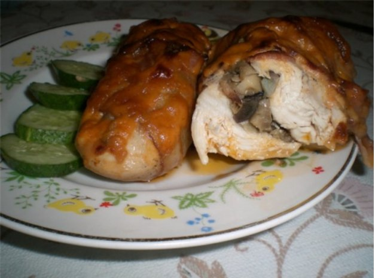

Курячі рулетики з грибами
Курячі рулетики з грибами прикрасять будь-який святковий стіл, що вже казати, про звичайному вечері.
Рулетики виходять м'які, ніжні, а всередині сюрприз: смажені шампіньйони з цибулею ідеально доповнюють все це блюдо.
Таке необхідно спробувати кожному, хоч раз у житті – смакота!
Дата публікації: 20 березня 2024
Автор: cookery